Criar um modelo de ficha à partir de um PDF
Criar um modelo de ficha à partir de um PDF editável
- Você deve ter um projeto de plug-in já criado. Se você ainda não tem um projeto de plug-in, leia "Criando um novo projeto de plug-in" e crie o seu antes (é bem fácil =] )\ \
- Abra o prompt de comando e navegue até a pasta de seu projeto de plug-in.
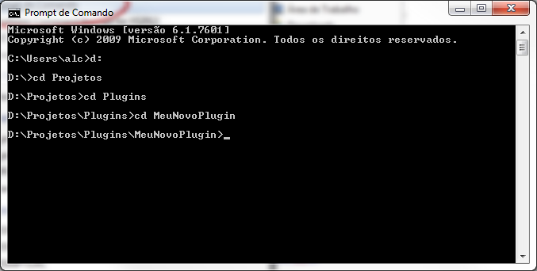\
- Execute o comando "rdk pdf" sem áspas no prompt de comando\
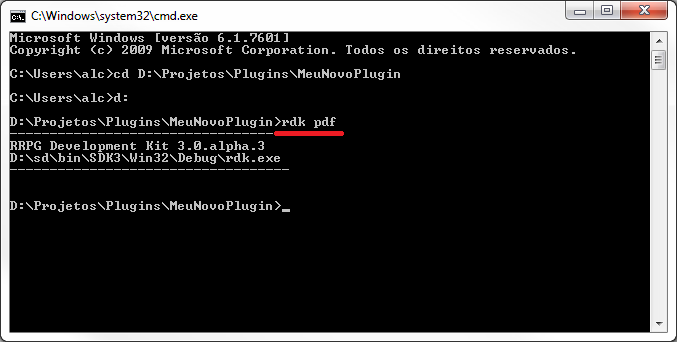\
Uma página como esta se abrirá no navegador de internet (Sempre utilize um browser mais atualizado. Experimente o Google Chrome):\ \ 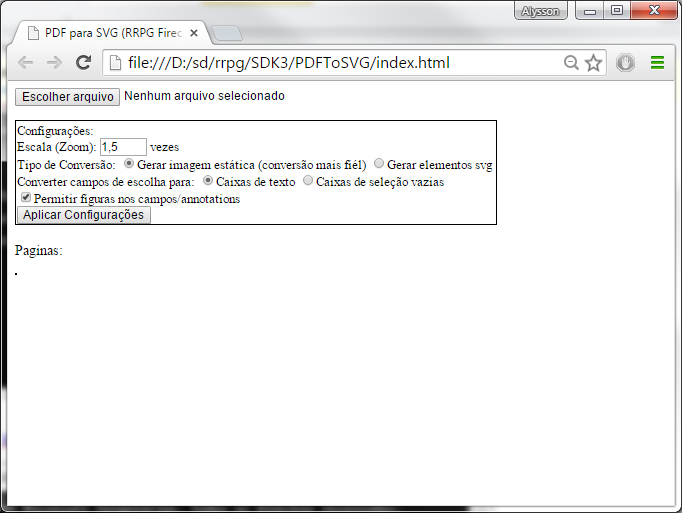
\
- Clique em "escolher arquivo" e selecione o PDF que deseja converter.
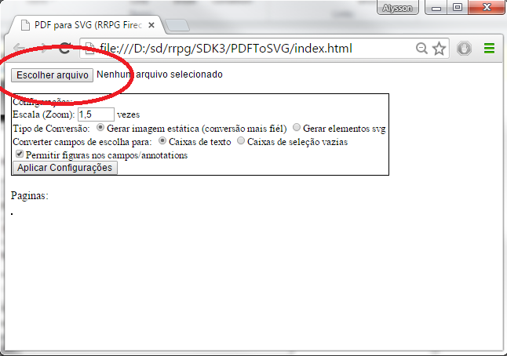
- Se o Zoom padrão de 1,5x deixar o conteúdo muito pequeno, escolha outro valor de escala que melhor se encaixar em seu PDF e clique em "Aplicar Configurações". Experimente outras configurações também!
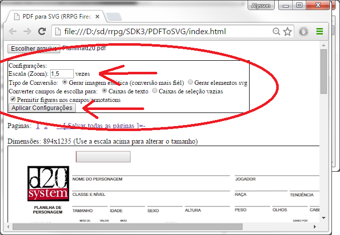\ \
- Clique em "salvar todas as páginas". Um arquivo ".zip" que contém o PDF em formato .SVG será gerado!
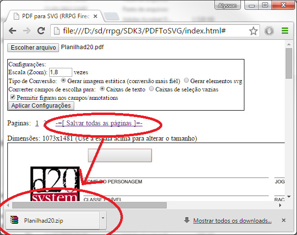
- Copie o arquivo .zip (gerado no passo anterior) para a pasta do projeto do plug-in.
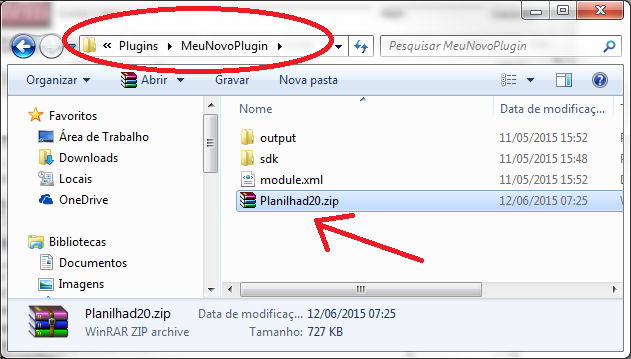
- Volte no prompt de comando e execute "rdk lfm \<ArquivoZip.zip>" sem as áspas e substituindo \<ArquivoZip.zip> pelo nome do arquivo gerado no passo 6.\ 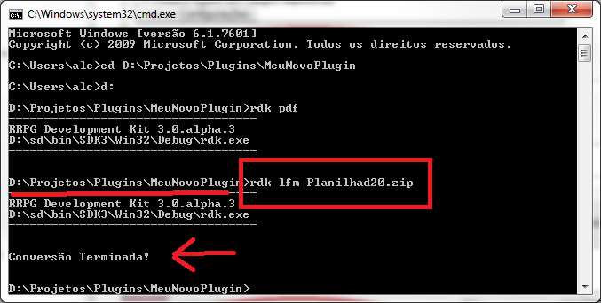\ \
- Volte na pasta projeto do plug-in e entre no sub-diretório criado pelo comando no passo anterior (Local onde contém os arquivos .lfm convertidos)\ 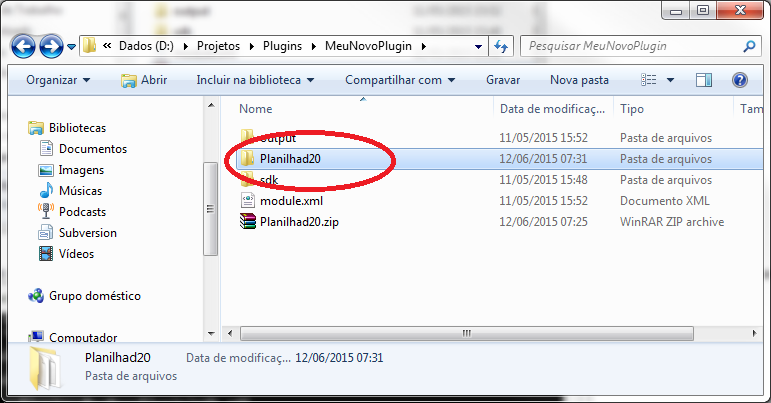\
- Edite o arquivo .lfm principal (aquele que contém o mesmo nome do arquivo .PDF):\ \ 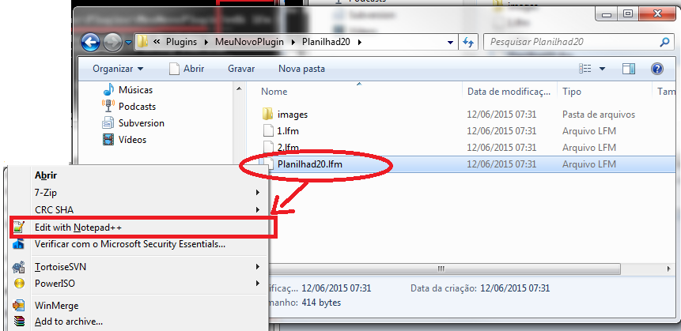\ \
- Altere os atributos "dataType" e "title" do form para valores adequados:\
dataType – Um texto que identifica qual é o tipo de conteúdo do seu modelo de ficha. Você deve inventar um Data Type único que possua ao menos cinco caracteres alfanuméricos, "_" ou "." e que não comece com dígitos. Use a criatividade! Exemplos: “br.com.rrpg.DnD5_S3”, “br.com.rrpg.VampiroAMascara”, “br.com.meusite.MeuModeloDeFicha”, “meuplugin.FichaX”, etc..\
title – O título do seu modelo de ficha. Este texto aparecerá na lista de fichas quando o usuário criar um personagem. Exemplos: “DnD 5th”, “Vampiro a Máscara”, “Meu modelo de ficha”, etc..\ \ 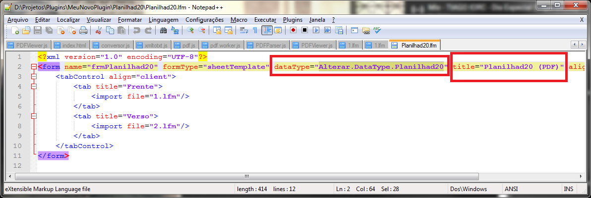\
- Pronto! Agora você já pode excluir o arquivo ".zip" que colocou na pasta projeto do plug-in e executar o comando "rdk i" para testar o modelo de ficha no RRPG =)\ 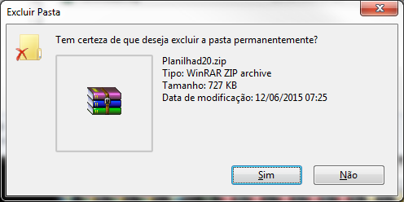
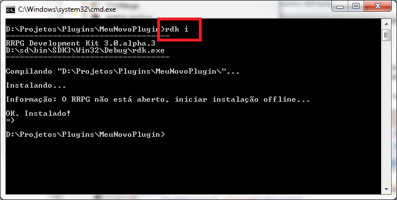
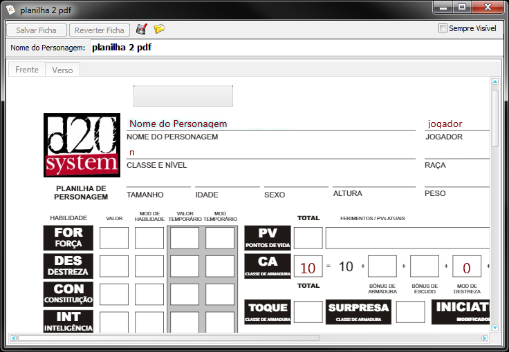
- Se quiser, edite os arquivos ".lfm" gerados em um editor de texto para complementar a ficha gerada!
Observações:
- Os cálculos e scripts existentes no PDF não são convertidos automaticamente. Você deve recriá-los manualmente, se quiser. Leia o tutorial Criar campos calculados em fichas.
Veja também:
- Testando o projeto de plug-in
- Veja outros tutoriais para completar seu plug-in.
- Caso queira adicionar mais funcionalidades ao modelo de ficha que acabou de criar, leia Interfaces visuais (Lua Forms)
- Disponibilizando o plug-in\
Created with the Personal Edition of HelpNDoc: Maximize Your Productivity with a Help Authoring Tool